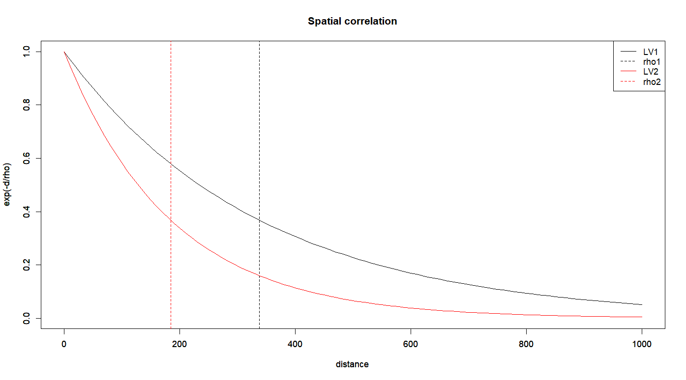
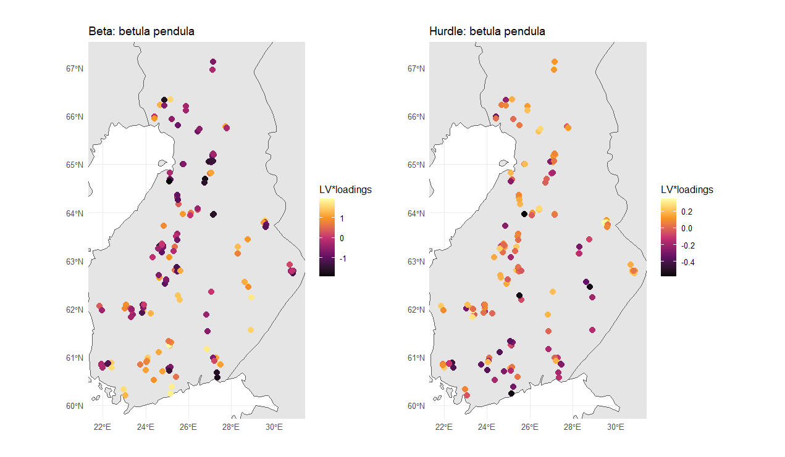

A really important part of working with JSDMs, including GLMMs and GLLVMs alike, is the residual covariance matrix \[ \Sigma \approx \Gamma \Gamma^\top, \] which can be used to examine correlations, i.e., strength and direction of co-occurence patterns among the species studied.
As a reminder, in gllvm:
Output of corrplot()
What if, instead of remaining static these co-occurence patterns are in fact:
Currently in gllvm, two main options exist:
Let the response \(y_{ij}, i=1,\dots,n,\, j=1,\dots,m\) be distributed according to some distribution \(F(\mu_{ij}, \phi_j)\), with mean \(\mu_{ij}\) (and dispersion \(\phi_j\)). Then, let \[ g(\mu_{ij}) = \eta_{ij} = \alpha_i + \beta_{0j} + x_i^\top \beta_j + u_i^\top \gamma_j, \] where
Under the basic model, we assume that the row effects and LV scores are independent draws from standard Gaussians, i.e., \(\alpha \sim \mathcal{N}(0, \sigma^2I_n)\) and \(u_i \overset{\text{iid}}{\sim} \mathcal{N}(0, I_d)\). For correlated effects, instead:
Here, \(u_{.q}\) denotes a vector of all scores for the \(q\)th LV, indicative of the need to change the perspective from rows to columns.
Depending on the application, a plethora of valid covariance structures exist. In gllvm, arguments row.eff and lvCor have the following options:
corAR1 for AR(1)corExp for the exponential correlation functioncorMatern for the Matérn correlation functioncorSym for compound symmetryAdditionally, the option corWithin can be used to specify whether correlations are assumed between, or within groups.
The compound symmetry assumes equal variances among the variables, as well as equal covariances between any two variables, i.e.,
\[ \Sigma = \begin{bmatrix} \sigma^2 & \sigma_{cs} & \sigma_{cs} & \cdots & \sigma_{cs} \\ \sigma_{cs} & \sigma^2 & \sigma_{cs} & \cdots & \sigma_{cs} \\ \sigma_{cs} & \sigma_{cs} & \sigma^2 & \cdots & \sigma_{cs} \\ \vdots & \vdots & \vdots & \ddots & \vdots \\ \sigma_{cs} & \sigma_{cs} & \sigma_{cs} & \cdots & \sigma^2 \end{bmatrix} \] Perhaps useful within some nested sampling designs
Autoregressive means dependence on previous values; in case of AR(1) specifically, dependence on the one immediate previous value, indicating the following form:
\[ \Sigma = \sigma^2 \begin{bmatrix} 1 & \rho & \rho^2 & \cdots & \rho^{T-1} \\ \rho & 1 & \rho & \cdots & \rho^{T-2} \\ \rho^2 & \rho & 1 & \cdots & \rho^{T-3} \\ \vdots & \vdots & \vdots & \ddots & \vdots \\ \rho^{T-1} & \rho^{T-2} & \rho^{T-3} & \cdots & 1 \end{bmatrix}, \rho\in(-1,1) \]
We will use corAR1 to accommodate temporal dependencies in a subset of the kelpforest data of Reed and Miller (2023):
fit_AR1lv2 <- gllvm(y = Y01, Xenv, family="binomial", num.lv=2,
formula = ~logKELP_FRONDSsc + PERCENT_ROCKYsc,
studyDesign = Xenv[,c("SITE", "TRANSECT", "YEAR")],
row.eff = ~ (1|SITE/TRANSECT), lvCor = ~corAR1(1|YEAR))
# afterwards, check the estimates for the parameters of the AR(1)-process
fit_AR1lv2$params$rho.lv rho.lv1 rho.lv2
0.9133615 0.9350670 The above value indicate a very strong correlation in the responses between consequent years.
Classically, the residual covariance between species \(i\) and \(j\) is: \[ \text{Cov}[i,j] = \gamma_i^\top \gamma_j = \sum_{q=1}^d \gamma_{iq}\gamma_{jq} \] Now, the AR(1) LVs allow us to consider both between and within species covariances at different timepoints/lags \[ \text{Cov}[i(t),j(t')] = \sum_{q=1}^d \gamma_{iq}\gamma_{jq}\text{Cov}[u_{.q}(t), u_{.q}(t')] \]
Often it makes sense to define the variance-covariance matrix via some parameterized covariance function or kernel:
\[ \Sigma[s,s'] = K(s,s'), \] Two conditions that need to be met in order to ensure that the resulting \(\Sigma\) is a proper covariance matrix:
When, instead of the locations, the value of \(K(s,s')\) depends only on distance \(d=\text{dist}(s,s')\), it is called stationary.
A prime example of a stationary covariance function is given by the exponential covariance function: \[ K(d) = \sigma^2\exp\left(- \frac{d}{\rho}\right), \] where \(\rho > 0\) is a parameter controlling the spatial range, i.e., the rate at which the covariances diminish as distance \(d\) increases.
corExpApplication goes similar to the case of corAR1, but now we also have to supply the coordinates using distLV:
For a model with lots of effects on different levels, it may be useful to compute the variance partitioning, to see the explanatory power of each component:
Similar to earlier, we may want to visualize the strength of the implied correlation, now w.r.t. distance:
We can now also examine spatial trends per species:
corExp paths are not “smooth”With a slight modification of corExp, we can define the famous—and as smooth as it gets—squared exponential kernel:
\[ K(d) = \sigma^2\exp\left(-\frac{d^2}{2\rho^2} \right) \]
strikes a balance between the previous two kernel functions: \[ K(d) = \sigma^2 \frac{2^{1-\nu}}{\Gamma(\nu)}\left(\frac{\sqrt{2\nu} d}{\rho} \right)^\nu \mathcal{K}_\nu\left(\frac{\sqrt{2\nu} d}{\rho}\right), \] where \(\Gamma(\cdot)\) is the gamma function, \(\mathcal{K}_\nu(\cdot)\) is the modified Bessel function, and \(\nu>0\) controls the smoothness.
corExp has smoothness of (\(\infty\)) \(0\), Matérn has that of \(\lceil\nu\rceil-1\); e.g., \(\nu=5/2\) implies degree of \(2\).corExp is for 1D (the Markov property)On top of obviously having to deal with the various newly added parameters like \(\sigma^2, \rho, \nu\), etc., how much does the model estimation actually change?
Sadly, quite a bit. Regarding variational approximations:
are required to facilitate efficient estimation of dynamic GLLVMs, ideally for both \(\Sigma^{-1}\) and \(A\), i.e., we seek some \(\hat{\Sigma}^{-1}, \hat{A}\) such that most of the elements in the matrices are \(0\).
gllvm:
Lambda.struc="bdNN")Lambda.struc="UNN")Let \(A=L L^\top\) be a \(n \times n\) variational (spatial) covariance matrix, with lower diagonal matrix \(L\) as its Cholesky factor.
Assume that the locations \(i=1,\dots,n\) have been arranged according to a particular ordering (can be random). For each \(i\), determine then its neighbours \(N(i)\) by choosing \(k\) sites among \(l=1,\dots,i-1\), which are closest to site \(i\), geographically.
Then, a sparsity pattern can be imposed by requiring \(\hat{L}[l,i]\) to be zero, whenever \(l \notin N(i)\), i.e., \(l\) is not a neighbour of \(i\).
The quality of the approximation depends on both the number of neighbours \(k\) and the ordering of the sites.
Work in progress for gllvm
State of spatial JSDM packages in general